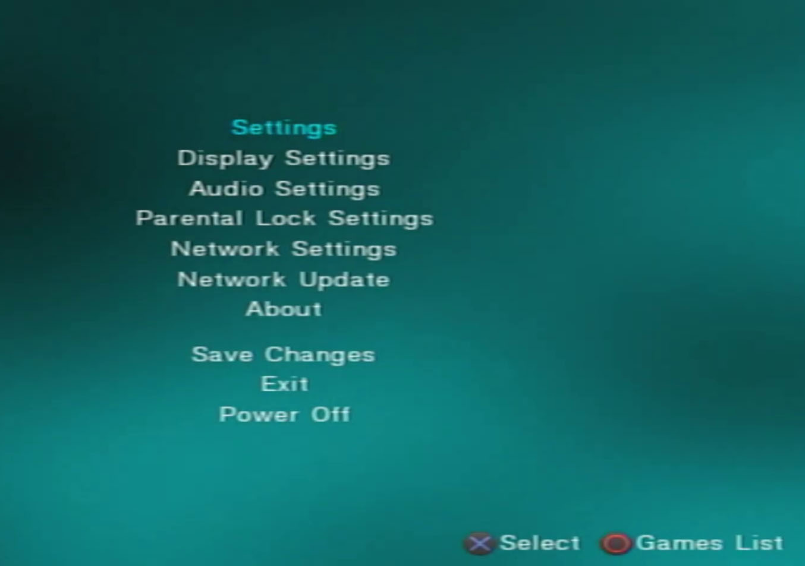

PS2 Añadir Juegos

Para esta Guia
Requisitos para este tutorial
- USB en formato FAT32
Para Empezar este Tutorial
- Para cargar Juegos rápido sin la necedad de caratulas o información del juego solo las ISO
- Las podemos pasar a nuestro USB en la carpeta llamada
DVD - Si no está creada la creamos con el mismo nombre
- El problema es que no podemos pasar juego mayor de 4GB ya que el formato de nuestro USB no nos permite, pero si podemos pasar cualquier juego menor a 4GB
- La otra opción para añadir juegos más completa
- Para esto descargaremos y descomprimir el archivo USBUTIL.rar (si no tiene el programa puede descárgalo desde Nuestra WEB)
- Para ejecutar nuestro programa buscamos entro de la carpeta el ejecutable USBUtil v2.2 rev1.0.exe
- Una vez abierto el programa por primera vez
- Le damos a continuar y en el menú de arriba
- Vamos a archivo y le damos a crear juego desde ISO
- Buscaremos el origen la carpeta donde están alojada nuestras ISO de nuestro juego de PS2
- Podemos seleccionar una o todas las ISO para pasar a nuestro USB
- En destino seleccionamos nuestra USB con la letra
- Si queremos podemos cambiar el nombre del juego en Nombre para el nuevo juego (no más de 32 caracteres mientras más corto mejor)
- Lo de medio lo dejamos en AUTO y Crear y listo
- Esperamos que termine y una vez terminado le damos a Cerrar
- Y nos mostrar la lista con los juegos recién pasados
- Podemos Renombrar o Eliminar nuestro juego con los botones de abajo
- Si queremos añadir más juegos podemos ir a Archivo/Crear juego desde ISO y hacemos lo mismo
- Y listo.
- Si le queremos agregar más juegos a la lista ya creada
- Le damos a abrir juegos
ul.cfg - Buscaremos nuestro destino en directorios con la letra asignada
- Y seleccionamos el archivo ul.cfg creado con anterioridad y le damos a cargar
- Y nos cargara nuestra lista de juegos creada
- Si queremos añadir más juegos podemos ir a Archivo/Crear juego desde ISO
- Y podemos añadir más juegos
- Para añadir caratulas o corregir nombre
- Para esto abriremos nuestra APP OPL Manager
- Si es la primera vez que se abre nuestra aplicación nos preguntara el Idioma de preferencia seleccionamos el Idioma
- En ruta le damos la ruta de nuestro USB con la letra asignada
- Si no estén las carpetas las creara automáticamente
- Una vez listo nos detectara nuestro juego en la USB
- Le asignamos lo que queremos descargar (caratulas, discos o logotipo) y le damos a comenzar
- Una vez terminado podemos cerrar la ventana y estaría listo las caratulas y la información
- Si queremos cambiar o agregar más información le damos a Editar CFG y podemos agregar más Información
- Y estaría listo
- Una vez terminado todo podemos conectar nuestra USB en la consola de PS2
- Y abrir OPL y esperamos que cargue nuestra información recién cargada
- En las configuraciones del OPL revisamos las siguientes configuraciones
- Si lo tenemos en ingles seria lo siguiente
- Pero si lo tenemos en ingles seria
- USB Device Start Mode en Auto
- En Default Menu en USB Games y le damos a OK
- Si queremos en Display Settings le podemos dejar el Widescreen en On
- Para ver los cover le damos a Enable Cover Art en On
- Cuando términos le damos a Save Changes para guardar los cambios
- Si lo tenemos en español seria lo siguiente
- En configuraciones principal
- Logotipo Playstation 2 en activado
- Modo de inicio para BDM en Automático
- Modo de inicio para Aplicaciones Automático
- Menú predeterminado en Juegos BDM y volvemos al menú anterior
- En pantalla
- Caratulas, serigrafias y fondos en activado
- Pantalla panorámica solo probar para ver cual se adapta mejor a sus conexiones
- Y listo cuando terminemos le damos a guardar los cambios
- Una vez terminado le damos a Games List con

- Una vez listo se cargarán las caratulas de nuestros juegos podremos jugar nuestros juegos recién pasados a nuestro USB.
-

×